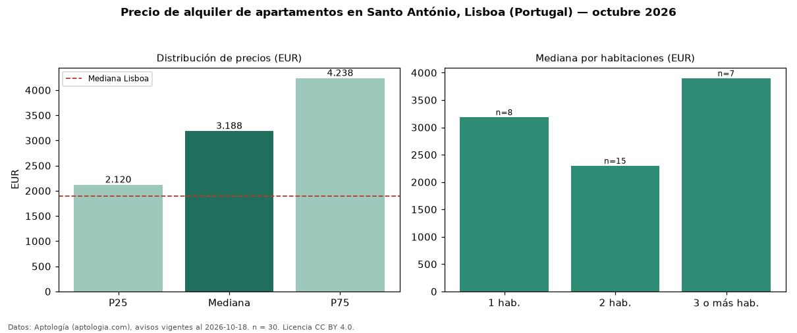

Precio de alquiler de apartamentos en Santo António, Lisboa (Portugal) — octubre 2026
En Santo António, Lisboa (Portugal), la mediana de canon mensual de apartamentos es EUR 3.188, según 30 avisos vigentes. Eso es 68 % por encima de la mediana de Lisboa para apartamentos (EUR 1.900). Por precio mediano es el puesto 1 de 6 zonas de Lisboa con al menos 30 avisos de apartamentos en alquiler (EUR): entre las más caras. El área mediana anunciada es 84 m². El segmento con más oferta es el de 2 habitaciones (15 avisos, mediana EUR 2.300); pasar de 1 habitación a 3 o más habitaciones cambia la mediana +22 %. La mitad central de los avisos va de EUR 2.120 a EUR 4.238 (razón 2,0), una dispersión moderada. Datos: Aptología (aptologia.com), CC BY 4.0 — https://www.aptologia.com/pt/arrendamento/lisboa/santo-antonio. Archivos: PDF, CSV con las cifras y gráfica PNG.

| Avisos únicos | 30 |
|---|---|
| Percentil 25 | COP 2.120 |
| Mediana | COP 3.187 |
| Percentil 75 | COP 4.237 |
Fuente: avisos vigentes de portales inmobiliarios recopilados por Aptología, deduplicados (mínimo 30 avisos únicos por celda). Precios pedidos, no cerrados. Fecha: 2026-10-18.